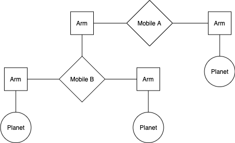

Homework 4: Sequences, ADT Trees
Due by 11:59pm on Thursday, February 29
Instructions
Download hw04.zip. Inside the archive, you will find a file called
hw04.py, along with a copy of the ok autograder.
Submission: When you are done, submit the assignment by uploading all code files you've edited to Gradescope. You may submit more than once before the deadline; only the final submission will be scored. Check that you have successfully submitted your code on Gradescope. See Lab 0 for more instructions on submitting assignments.
Using Ok: If you have any questions about using Ok, please refer to this guide.
Readings: You might find the following references useful:
Grading: Homework is graded based on correctness. Each incorrect problem will decrease the total score by one point. This homework is out of 2 points.
Required Questions
Getting Started Videos
These videos may provide some helpful direction for tackling the coding problems on this assignment.
To see these videos, you should be logged into your berkeley.edu email.
Sequences
Q1: Deep Map
Write a function deep_map that takes a list s and a one-argument function
f. s may be a nested list, one that contain other lists. deep_map modifies
s by replacing each element within s or any of the lists it contains with
the result of calling f on that element.
deep_map returns None and should not create any new lists.
Hint:
type(a) == listwill evaluate toTrueifais a list.
def deep_map(f, s):
"""Replace all non-list elements x with f(x) in the nested list s.
>>> six = [1, 2, [3, [4], 5], 6]
>>> deep_map(lambda x: x * x, six)
>>> six
[1, 4, [9, [16], 25], 36]
>>> # Check that you're not making new lists
>>> s = [3, [1, [4, [1]]]]
>>> s1 = s[1]
>>> s2 = s1[1]
>>> s3 = s2[1]
>>> deep_map(lambda x: x + 1, s)
>>> s
[4, [2, [5, [2]]]]
>>> s1 is s[1]
True
>>> s2 is s1[1]
True
>>> s3 is s2[1]
True
"""
"*** YOUR CODE HERE ***"
Use Ok to test your code:
python3 ok -q deep_mapData Abstraction
Acknowledgements
This problem is based on one from Structure and Interpretation of Computer Programs Section 2.2.2.

We are making a planetarium mobile. A mobile is a type of hanging sculpture. A binary mobile consists of two arms. Each arm is a rod of a certain length, from which hangs either a planet or another mobile. For example, the below diagram shows the left and right arms of Mobile A, and what hangs at the ends of each of those arms.
{kind=link}

We will represent a binary mobile using the data abstractions below.
- A
mobilemust have both a leftarmand a rightarm. - An
armhas a positive length and must have something hanging at the end, either amobileorplanet. - A
planethas a positive mass, and nothing hanging from it.
Below are the implementations of the various data abstractions used in mobiles.
The mobile and arm data abstractions have been completed for you.
Implementation of the Mobile Data Abstraction (for your reference, no need to do anything here):
def mobile(left, right):
"""Construct a mobile from a left arm and a right arm."""
assert is_arm(left), "left must be an arm"
assert is_arm(right), "right must be an arm"
return ['mobile', left, right]
def is_mobile(m):
"""Return whether m is a mobile."""
return type(m) == list and len(m) == 3 and m[0] == 'mobile'
def left(m):
"""Select the left arm of a mobile."""
assert is_mobile(m), "must call left on a mobile"
return m[1]
def right(m):
"""Select the right arm of a mobile."""
assert is_mobile(m), "must call right on a mobile"
return m[2]def arm(length, mobile_or_planet):
"""Construct an arm: a length of rod with a mobile or planet at the end."""
assert is_mobile(mobile_or_planet) or is_planet(mobile_or_planet)
return ['arm', length, mobile_or_planet]
def is_arm(s):
"""Return whether s is an arm."""
return type(s) == list and len(s) == 3 and s[0] == 'arm'
def length(s):
"""Select the length of an arm."""
assert is_arm(s), "must call length on an arm"
return s[1]
def end(s):
"""Select the mobile or planet hanging at the end of an arm."""
assert is_arm(s), "must call end on an arm"
return s[2]Q2: Mass
Implement the planet data abstraction by completing the planet constructor
and the mass selector so that a planet is represented using a two-element list
where the first element is the string 'planet' and the second element is its mass.
def planet(mass):
"""Construct a planet of some mass."""
assert mass > 0
"*** YOUR CODE HERE ***"
def mass(p):
"""Select the mass of a planet."""
assert is_planet(p), 'must call mass on a planet'
"*** YOUR CODE HERE ***"
def is_planet(p):
"""Whether p is a planet."""
return type(p) == list and len(p) == 2 and p[0] == 'planet'The total_mass function demonstrates the use of the mobile, arm,
and planet abstractions. You do NOT need to implement anything here. You may use
the total_mass function in the following questions.
def examples():
t = mobile(arm(1, planet(2)),
arm(2, planet(1)))
u = mobile(arm(5, planet(1)),
arm(1, mobile(arm(2, planet(3)),
arm(3, planet(2)))))
v = mobile(arm(4, t), arm(2, u))
return t, u, v
def total_mass(m):
"""Return the total mass of m, a planet or mobile.
>>> t, u, v = examples()
>>> total_mass(t)
3
>>> total_mass(u)
6
>>> total_mass(v)
9
"""
if is_planet(m):
return mass(m)
else:
assert is_mobile(m), "must get total mass of a mobile or a planet"
return total_mass(end(left(m))) + total_mass(end(right(m)))Run the ok tests for total_mass to make sure that your planet and mass
functions are implemented correctly.
Use Ok to test your code:
python3 ok -q total_massQ3: Balanced
Implement the balanced function, which returns whether m is a balanced
mobile. A mobile is balanced if both of the following conditions are met:
- The torque applied by its left arm is equal to the torque applied by its right
arm. The torque of the left arm is the length of the left rod multiplied by the
total mass hanging from that rod. Likewise for the right. For example,
if the left arm has a length of
5, and there is amobilehanging at the end of the left arm of total mass10, the torque on the left side of our mobile is50. - Each of the mobiles hanging at the end of its arms is itself balanced.
Planets themselves are balanced, as there is nothing hanging off of them.
Reminder: You may use the
total_massfunction above. Don't violate abstraction barriers. Instead, use the selector functions that have been defined.
def balanced(m):
"""Return whether m is balanced.
>>> t, u, v = examples()
>>> balanced(t)
True
>>> balanced(v)
True
>>> p = mobile(arm(3, t), arm(2, u))
>>> balanced(p)
False
>>> balanced(mobile(arm(1, v), arm(1, p)))
False
>>> balanced(mobile(arm(1, p), arm(1, v)))
False
>>> from construct_check import check
>>> # checking for abstraction barrier violations by banning indexing
>>> check(HW_SOURCE_FILE, 'balanced', ['Index'])
True
"""
"*** YOUR CODE HERE ***"
Use Ok to test your code:
python3 ok -q balancedTrees
Q4: Maximum Path Sum
Write a function that takes in a tree and returns the maximum sum of the values along any root-to-leaf path in the tree. A root-to-leaf path is a sequence of nodes starting at the root and proceeding to some leaf of the tree. You can assume the tree will have positive numbers for its labels.
def max_path_sum(t):
"""Return the maximum root-to-leaf path sum of a tree.
>>> t = tree(1, [tree(5, [tree(1), tree(3)]), tree(10)])
>>> max_path_sum(t) # 1, 10
11
>>> t2 = tree(5, [tree(4, [tree(1), tree(3)]), tree(2, [tree(10), tree(3)])])
>>> max_path_sum(t2) # 5, 2, 10
17
"""
"*** YOUR CODE HERE ***"
Use Ok to test your code:
python3 ok -q max_path_sumCheck Your Score Locally
You can locally check your score on each question of this assignment by running
python3 ok --scoreThis does NOT submit the assignment! When you are satisfied with your score, submit the assignment to Gradescope to receive credit for it.
Submit
Submit this assignment by uploading any files you've edited to the appropriate Gradescope assignment. Lab 00 has detailed instructions.
Exam Practice
Homework assignments will also contain prior exam-level questions for you to take a look at. These questions have no submission component; feel free to attempt them if you'd like a challenge!
- Summer 2021 MT Q4: Maximum Exponen-tree-ation
- Summer 2019 MT Q8: Leaf It To Me
- Summer 2017 MT Q9: Temmie Flakes